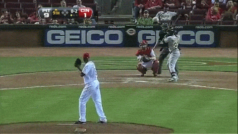

The fastball is the most common type of pitch thrown by pitchers in baseball and softball. "Power pitchers," such as former American major leaguers Nolan Ryan and Roger Clemens, rely on speed to prevent the ball from being hit, and have thrown fastballs at speeds of 95–105 miles per hour (153–169 km/h) (officially) and up to 108.1 miles per hour (174.0 km/h) (unofficially).[1] Pitchers who throw more slowly can put movement on the ball, or throw it on the outside of home plate where batters can't easily reach it.
Fastballs are usually thrown with backspin, so that the Magnus effect creates an upward force on the ball. This causes it to fall less rapidly than expected, and sometimes causes an optical illusion often called a rising fastball. Although it is impossible for a human to throw a baseball fast enough and with enough backspin for the ball to actually rise, to the batter the pitch seems to rise due to the unexpected lack of natural drop on the pitch.
A straight pitch is achieved by gripping the ball with the fingers across the wide part of the seam (called a "four-seam fastball") so that both the index and middle fingers are touching two seams perpendicularly. A sinking fastball is thrown by gripping it across the narrow part (a "two-seam fastball") so that both the index and middle fingers are along a seam. Lateral motion is achieved by holding a four-seam fastball off-center (a "cut fastball"), and sinking action with a lateral break is thrown by splitting the fingers along the seams (a "split-finger fastball").
